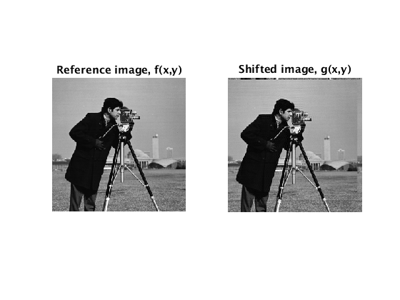
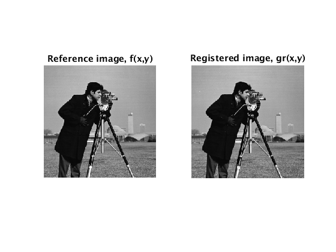

Efficient subpixel image registration by cross-correlation.
Registers two images (2-D rigid translation) within a fraction of a pixel specified by the user. Instead of computing a zero-padded FFT (fast Fourier transform), this code uses selective upsampling by a matrix-multiply DFT (discrete FT) to dramatically reduce computation time and memory without sacrificing accuracy. With this procedure all the image points are used to compute the upsampled cross-correlation in a very small neighborhood around its peak. This algorithm is referred to as the single-step DFT algorithm in [1].
[1] Manuel Guizar-Sicairos, Samuel T. Thurman, and James R. Fienup, "Efficient subpixel image registration algorithms," Opt. Lett. 33, 156-158 (2008).
-----------------------------------------------------------------------
Copyright (c) 2016, Manuel Guizar Sicairos, James R. Fienup, University of Rochester All rights reserved.
Redistribution and use in source and binary forms, with or without modification, are permitted provided that the following conditions are met:
* Redistributions of source code must retain the above copyright
notice, this list of conditions and the following disclaimer.
* Redistributions in binary form must reproduce the above copyright
notice, this list of conditions and the following disclaimer in
the documentation and/or other materials provided with the distribution
* Neither the name of the University of Rochester nor the names
of its contributors may be used to endorse or promote products derived
from this software without specific prior written permission.THIS SOFTWARE IS PROVIDED BY THE COPYRIGHT HOLDERS AND CONTRIBUTORS "AS IS" AND ANY EXPRESS OR IMPLIED WARRANTIES, INCLUDING, BUT NOT LIMITED TO, THE IMPLIED WARRANTIES OF MERCHANTABILITY AND FITNESS FOR A PARTICULAR PURPOSE ARE DISCLAIMED. IN NO EVENT SHALL THE COPYRIGHT OWNER OR CONTRIBUTORS BE LIABLE FOR ANY DIRECT, INDIRECT, INCIDENTAL, SPECIAL, EXEMPLARY, OR CONSEQUENTIAL DAMAGES (INCLUDING, BUT NOT LIMITED TO, PROCUREMENT OF SUBSTITUTE GOODS OR SERVICES; LOSS OF USE, DATA, OR PROFITS; OR BUSINESS INTERRUPTION) HOWEVER CAUSED AND ON ANY THEORY OF LIABILITY, WHETHER IN CONTRACT, STRICT LIABILITY, OR TORT (INCLUDING NEGLIGENCE OR OTHERWISE) ARISING IN ANY WAY OUT OF THE USE OF THIS SOFTWARE, EVEN IF ADVISED OF THE POSSIBILITY OF SUCH DAMAGE. --------------------------------------------------------------------------
Contents
Syntax
The code receives the FFT of the reference and the shifted images, and an (integer) upsampling factor. The code expects FFTs with DC in (1,1) so do not use fftshift.
output = dftregistration(fft2(f),fft2(g),usfac);
The images are registered to within 1/usfac of a pixel.
output(1) is the normalized root-mean-squared error (NRMSE) [1] between f and g.
output(2) is the global phase difference between the two images (should be zero if images are real-valued and non-negative).
output(3) and output(4) are the row and column shifts between f and g respectively.
[output Greg] = dftregistration(fft2(f),fft2(g),usfac);
Greg is an optional output, it returns the Fourier transform of the registered version of g, where the global phase difference [output(2)] is also compensated.
Obtain a reference and shifted images
To illustrate the use of the algorithm, lets obtain a reference and a shifted image. First we read the reference image f(x,y)
f = im2double(imread('cameraman.tif'));
Define g(x,y) as a version of f(x,y) shifted by fractional values of a pixel and multiplied by a global phase.
deltar = -3.48574; deltac = 8.73837; phase = 2; [nr,nc]=size(f); Nr = ifftshift((-fix(nr/2):ceil(nr/2)-1)); Nc = ifftshift((-fix(nc/2):ceil(nc/2)-1)); [Nc,Nr] = meshgrid(Nc,Nr); g = ifft2(fft2(f).*exp(1i*2*pi*(deltar*Nr/nr+deltac*Nc/nc))).*exp(-1i*phase); figure(1); subplot(1,2,1); imshow(abs(f)); title('Reference image, f(x,y)') subplot(1,2,2); imshow(abs(g)); title('Shifted image, g(x,y)')
We have shifted the image by 8.73837 and -3.48574 pixels in the x and y direction, respectively, and added a phase of 2 radians to g(x,y). The shift was implemented by applying a linear phase on its FT, thus we have assumed that the images wrap around (features leaving one side of the window reappear on the opposite side) and that the image is band-limited (interpolated by a sinc function). Cross-correlation image registration by DFTs (both the matrix-multiply DFT and the zero-padded FFT) share these assumptions.
This registration technique is well suited to compare images that are captured in Fourier domain (i.e. to evaluate an image reconstruction by holography or phase retrieval) which are strictly band-limited and exhibit the wrap-around effect.
Even though the registration code assumes band-limited images that wrap around, we have obtained very good results when applying it to band-limited microscope images, and aliased imagery. That is when shifting the image brings in new content instead of wrapping it around or when the images are not band-limited.
Sample Image Registration
dftregistration.m receives the FT of f and g and the upsampling factor. The code expects DC of the FTs at (1,1) so don't use fftshift.
We now use the image registration code to register f and g within 0.01 pixels by specifying an upsampling parameter of 100
usfac = 100; [output, Greg] = dftregistration(fft2(f),fft2(g),usfac); display(output),
output =
0.0007 2.0000 -3.4900 8.7400
The pixel shift error (difference between the true and obtained shifts) is 0.0016 and 0.0043 in the x and y directions respectively. Well within the expected accuracy of 0.01. Notice that using the conventional zero-padded FFT approach with the same accuracy, would require computation of a 25,600x25,600 FFT, which would require more than 19 Gbytes of RAM and a very comfortable chair.
The following plot shows the reference image and the registered image.
figure(1); subplot(1,2,1); imshow(abs(f)); title('Reference image, f(x,y)') subplot(1,2,2); imshow(abs(ifft2(Greg))); title('Registered image, gr(x,y)')
Disclaimer
I have made every effort to evaluate the proper working of this code under many different conditions. However, it is the responsibility of the user to ensure that this registration code is adequate and working correcntly for their application.
Feel free to e-mail me with questions or comments.